GUÍA PARA EL INICIO FORMAL DE PROYECTOS EN EL SIIU
Información de Control Documental
Código: VI-GU-15
Versión: 01 / 29-ABR-2024
Aviso legal institucional: La impresión o copia digital de este documento se considera "COPIA NO CONTROLADA". Solo se garantiza la actualización de la documentación en el sitio oficialhttp://www.udea.edu.co.
Contenido
- Definición
- Contenido
- 2.1. Requisitos
- 2.2. Usuarios que intervienen
- 2.3. Ingresar a la aplicación SIIU
- 2.4. Proceso para realizar el inicio formal al proyecto
- 2.5. Pestaña Inicio Formal
- 2.5.1. Descargar documento de aprobación
- 2.5.2. Actualizar participantes
- 2.5.3. Cambiar Participante NN
- 2.5.4. Compromisos del Proyecto
- 2.5.5. Etapas del proyecto
- 2.5.6. Nueva etapa
- 2.6. Pestaña Condiciones Formales
- 2.7. Pestaña Generar Acta
- 2.8. Pestaña Adjuntar Documento
- 2.9. Cerrar Inicio Formal
- 2.10. Verificación estado del proyecto
- Nota de cambio
- Registro de Control y Firmas
1. Definición
Este documento se ha elaborado con el fin de ayudar y capacitar a las personas que desde los grupos y centros de investigación / extensión ADMINISTRAN y gestionan los proyectos, los cuales deben estar registrados en el Sistema de Información para la Investigación Universitaria: Investigación y Extensión – SIIU. Dado lo anterior se aclara que esta guía no hace parte de la normativa universitaria y solamente se debe utilizar como una herramienta que orienta el paso a paso que se debe seguir en el SIIU para dar inicio formal a los proyectos.
2. Contenido
2.1. Requisitos
Para poder dar inicio formal a un proyecto, se deben cumplir las siguientes condiciones: - El proyecto en cuestión debe estar en estado Aprobado. - Haber realizado previamente el proceso de gestión de configuración del presupuesto. - El Centro es el usuario autorizado para hacer el inicio formal del proyecto, excepto para los cupos de Joven Investigador que es la Vicerrectoría de Investigación. - Tener a la mano el porcentaje de participación y beneficios de cada uno de los participantes del proyecto. - Debe tener la información completa de los participantes designados como NN que van a participar en el proyecto, según los términos de referencia de la convocatoria.
Para tener en cuenta
Los participantes registrados en el proyecto son las personas que deberán firmar el Acta de Inicio. Si alguno de ellos ya no hará parte del proyecto, se deberá hacer una solicitud de cambio de investigador ANTES de que se realice el Inicio formal del proyecto.
2.2. Usuarios que intervienen
- Usuario Centro: Jefe Centro de Investigación.
2.3. Ingresar a la aplicación SIIU
El usuario debe autenticarse en el portal de la Universidad de Antioquia, http://www.udea.edu.co, buscar la opción aplicaciones y entre ellas elegir el SIIU, así:
- Ingresa al portal de la Universidad:
http://www.udea.edu.co, en el encabezado seleccione Ingresar >> Iniciar sesión (Ver figura 1).
 Figura 1 - Ingrese al portal
Figura 1 - Ingrese al portal
- Saldrá la pantalla para iniciar sesión como usuario del portal (Ver figura 2); ingrese su usuario y contraseña y presione clic en el botón CONECTAR.
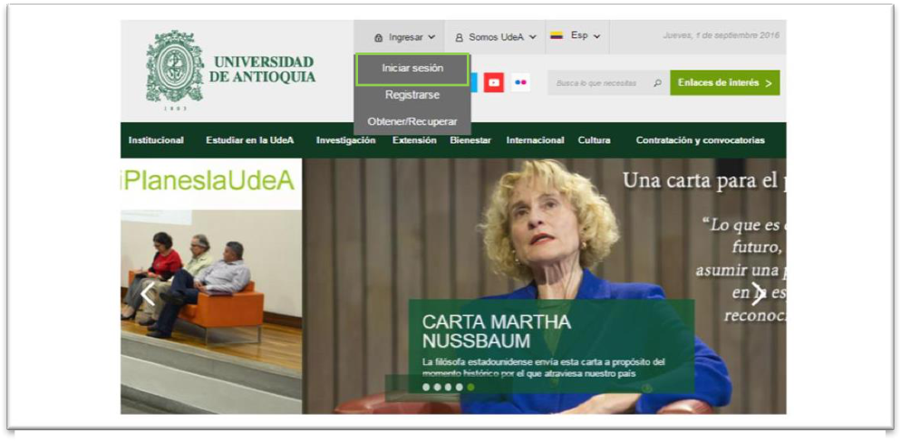
Figura 2 - Iniciar sesión en el portal- Se abrirá una ventana con su nombre en la parte izquierda de la página; seleccione Enlaces de interés >> Mis aplicaciones (Ver figura 3).
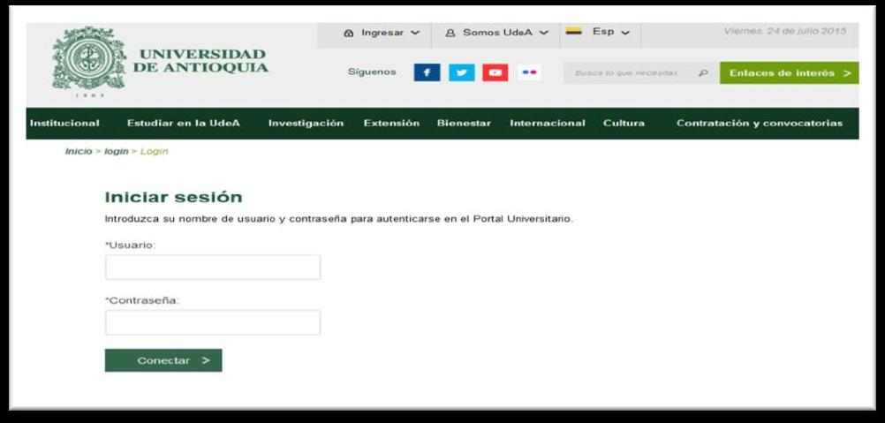
Figura 3 - Información de usuario registrado en el portal- Se abrirá una ventana con las aplicaciones de la Universidad; seleccione SIIU (Ver figura 4).
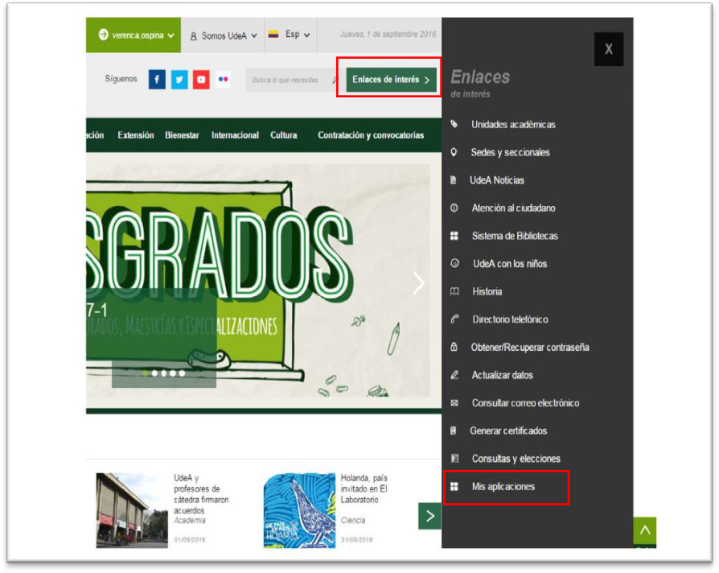
Figura 4 - Pantalla de aplicaciones disponibles para usuario> Se debe abrir una nueva ventana con la aplicación SIIU en la que podrá iniciar el registro del proyecto. Si la ventana no abre inmediatamente, es necesaria la configuración de ventanas emergentes en el navegador y seleccionar la opción que autorice el SIIU.
2.4. Proceso para realizar el inicio formal al proyecto
> Para realizar el inicio formal primero debe realizar el proceso de configuración del presupuesto; sin este proceso inicial el sistema no le permitirá realizar el inicio formal al proyecto. Si desconoce cómo hacerlo, consulte el "Manual configuración del presupuesto" en la misma ruta de este manual.
Estando en el SIIU: 1. Ingrese en el menú TrámitesAdministrativos. 2. Seleccione la opción Seguimiento Proyectos. (Ver figura 5).
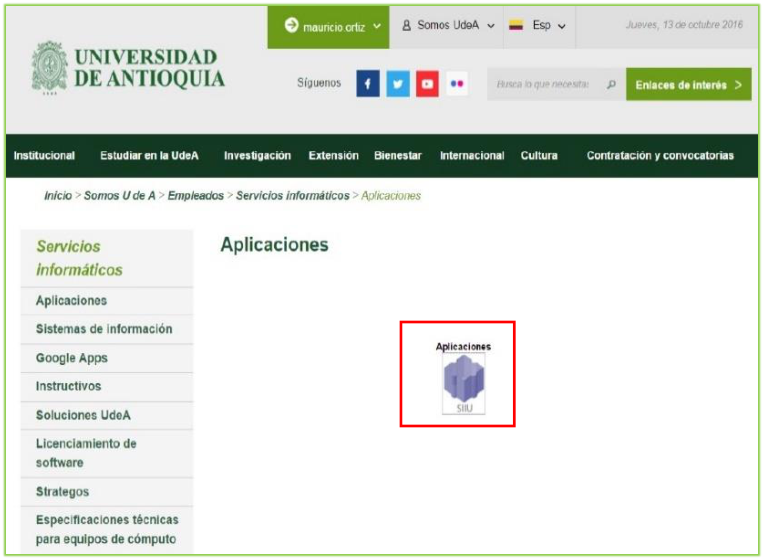
Figura 5 - Seguimiento a proyectos- El sistema abrirá una ventana de búsqueda (Figura 6), en la que deberá seleccionar el Centro de investigación (campo obligatorio); puede realizar la consulta con cualquiera de los campos disponibles y presione el botón Consultar.
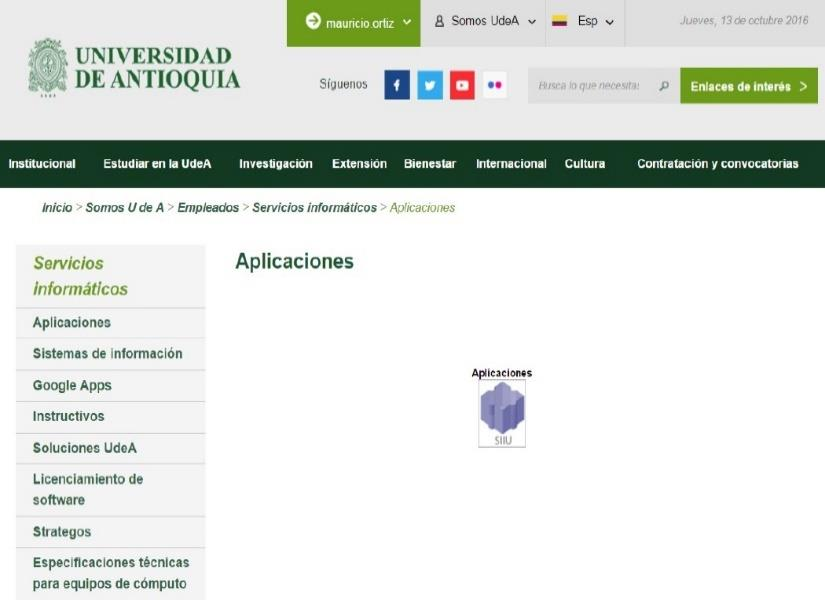
Figura 6 - Filtros de búsqueda- El sistema muestra los proyectos que cumplen con los parámetros de búsqueda solicitados. (Ver figura 7).
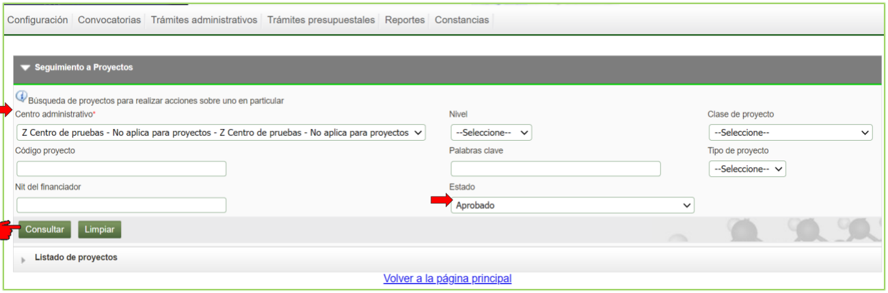
Figura 7 - Resultado de consulta> Recuerde: Solo podrá dar inicio formal a los proyectos que se encuentren en estado APROBADO.
- Una vez tenga el resultado de la consulta, seleccione con el cursor el proyecto al cual se dará el inicio formal y presione clic. El sistema habilita las opciones disponibles para el proyecto:
| Opción Disponible | Descripción |
|---|---|
| Ver Detalle | Muestra la información general del proyecto y la Convocatoria. |
| Inicio Formal | Permite hacer el inicio formal del proyecto. |
| Compromisos | Muestra los compromisos adquiridos. |
| Etapas | Muestra las etapas definidas del proyecto. |
| Cerrar Proyecto | Cuando el proyecto esté finalizado, podrá cerrar el proyecto. |
| Histórico | Permite ver todas las solicitudes que se hayan realizado. |
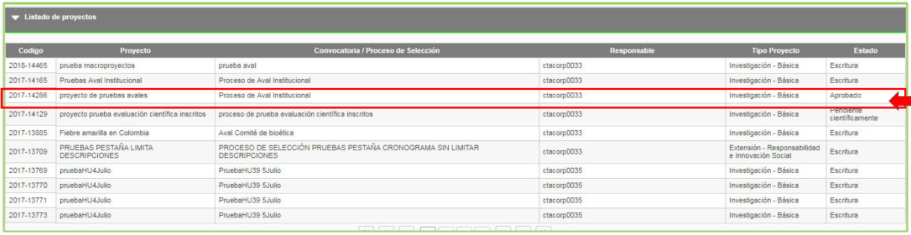
Figura 8 - Seleccionar proyecto- En las opciones disponibles, presione clic en el botón Inicio Formal tal como muestra la figura 9.
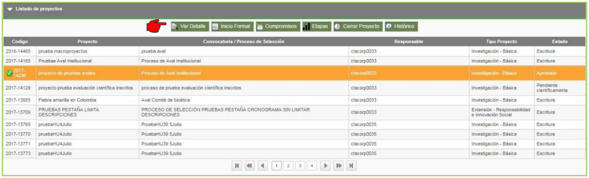
Figura 9 - Botón inicio formalEl sistema abre un nuevo formulario con 4 pestañas; diligéncielas adecuadamente para realizar el inicio formal al proyecto, tal como muestra la figura 10: - Inicio Formal - Condiciones Formales - Generar Acta - Adjuntar Documento
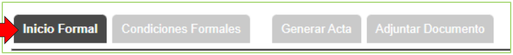
Figura 10 - Pestañas para el inicio formal2.5. Pestaña Inicio Formal
El sistema abre un formulario donde deberá ingresar información importante del proyecto descrito en la siguiente tabla:
| Campo | Detalle |
|---|---|
| Código Interno | Es el código que utiliza el centro para la administración de sus proyectos. |
| Fecha de Aprobación | Es la fecha en la que el CODI aprobó el proyecto, mediante el acta del comité. Esta fecha sale por defecto. |
| Fecha de Inicio | La fecha en la que iniciará el proyecto. Tenga en cuenta que para pasos posteriores esta fecha no es editable. |
| Fecha de Finalización | De acuerdo con la duración del proyecto, esta fecha se calcula automáticamente. |
| Información financiador o cofinanciador | |
| Convenio o contrato | Número del convenio o contrato cuando hay un cofinanciador. |
| Fecha suscripción | Fecha de suscripción del convenio o contrato. |
| Número de acta de PI | Número de acta de propiedad intelectual. Este campo no es obligatorio. |
| Fecha suscripción | Fecha de suscripción del acta de propiedad intelectual. |
| Propiedad intelectual | % de participación con la propiedad intelectual. |
Figura 11 - Pantalla inicio formal
Una vez diligencie la información solicitada, finalice presionando GUARDAR.
El sistema genera el mensaje indicando que el "Inicio formal ha sido creado exitosamente", en la parte superior de la ventana (Ver figura 12).
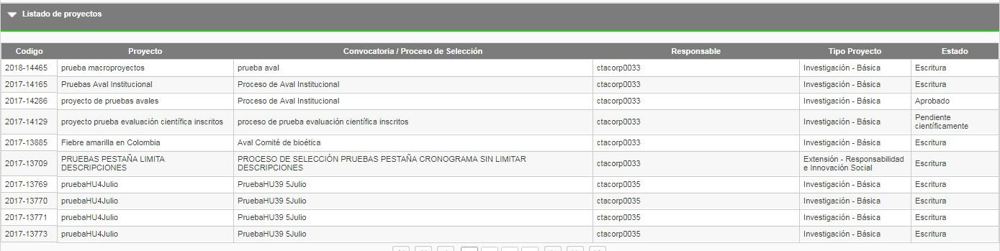
Figura 12 - Mensaje de confirmación2.5.1. Descargar documento de aprobación
Para descargar el documento de aprobación que ha sido cargado previamente, debe dar clic en el icono que se encuentra en la primera columna Descargar (icono de descarga). (Ver figura 13).
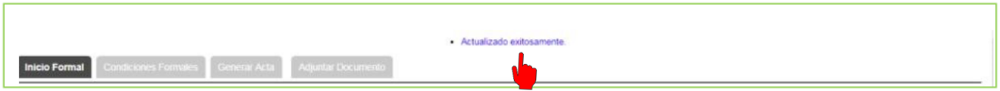
Figura 13 - Opción para descargar documentoObserve que en la pestaña Inicio formal aparecen botones importantes para la configuración detallada (Ver figura 14): - Actualizar Participantes - Cambiar Participante N.N. - Compromisos del Proyecto - Etapas del Proyecto
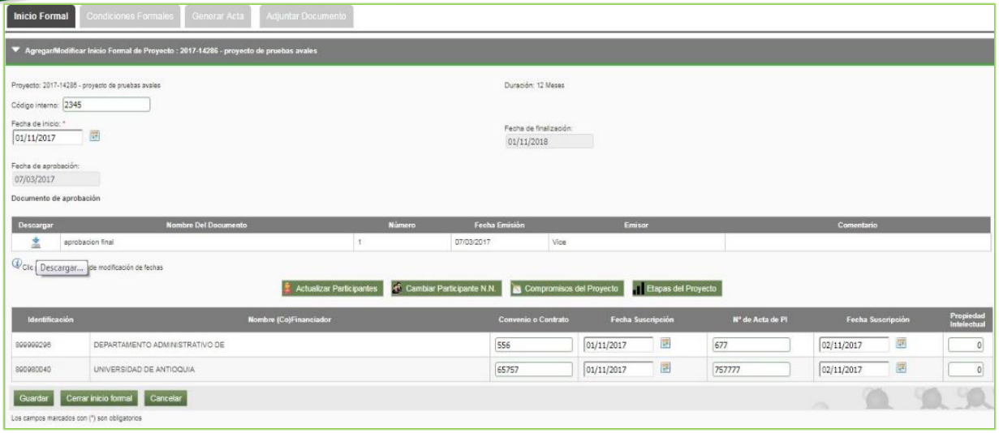
Figura 14 - Botones de configuración del inicio formal2.5.2. Actualizar participantes
Esta opción le permite actualizar la información de los participantes que fueron matriculados en el proyecto. Presione el botón Actualizar Participante (Ver figura 15).
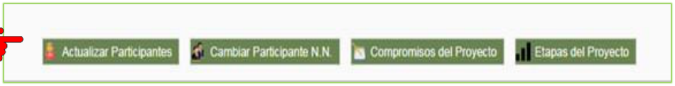
Figura 15 - Actualizar participanteEl sistema lo llevará a una ventana donde encontrará el listado de participantes matriculados con su información inicial almacenada. Para cada participante hay una fila; al extremo derecho encontrará el icono de un lápiz, el cual le permite editar la información del participante seleccionado. (Ver figura 15b/16).
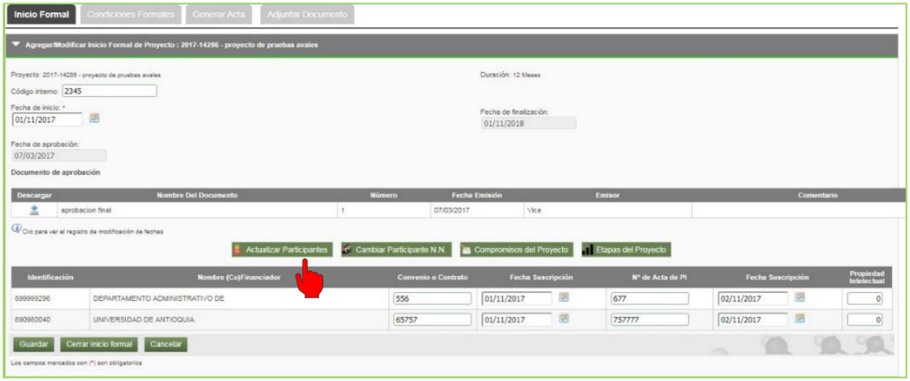
Figura 16 - Listado de participantesAl presionar el icono del lápiz, el sistema abrirá una nueva ventana donde podrá elegir o modificar diferentes campos habilitados:
| Campos | Detalle |
|---|---|
| Fecha inicio proyecto | Este campo no es editable. |
| Fecha finalización proyecto | Este campo no es editable. |
| Participante | Este campo no es editable. |
| Rol en el proyecto | Este campo no es editable, salvo si es participante NN. |
| Institución por la cual participa | Este campo no es editable. |
| Grupo por el que participa | Este campo se puede editar y modificar. |
| Fecha de Ingreso* | Este campo se puede editar y modificar (obligatorio). |
| Vínculo contractual para el proyecto | Seleccione vínculo contractual si lo tiene; Opción: Otro o Ninguno. |
| Requiere participación y beneficios | Seleccione Sí o No. |
| % participación y beneficio | Asigne el valor porcentual por participante; recuerde que el tope máximo es 100%. Si se tienen varios participantes, la sumatoria debe ser 100%. |
| Dedicación por fuera del plan de trabajo (Personal externo) | |
| Horas por semana | Asigne número de horas, teniendo en cuenta los topes definidos desde talento humano. |
| Meses | Asigne número de meses, teniendo en cuenta que no debe superar la duración total del proyecto. |
| Dedicación dentro del plan de trabajo (Empleados, personal interno) | |
| Horas por semana | Asigne número de horas, teniendo en cuenta los topes definidos desde talento humano. |
| Meses | Asigne número de meses, teniendo en cuenta que no debe superar la duración total del proyecto. |
| Nota aclaratoria para el %P y B | Ingrese nota aclaratoria del % de participación y beneficios por participante si lo requiere (aparecerá en documentos de respaldo; no es obligatorio). |
| Función | Ingrese las funciones a desarrollar en el proyecto por parte del participante. |
| Observaciones | Ingrese observaciones si son requeridas. |
Regla de Oro del Porcentaje
Tenga en cuenta que algunos participantes tienen % de participación y beneficio y otros no. Debe garantizar que entre TODOS los participantes sume exactamente el 100%.
Figura 17 - Formulario para actualizar participante
Una vez presione el botón GUARDAR, el sistema lo devolverá a la pestaña Participantes Proyecto, donde podrá evidenciar los cambios realizados. Deberá realizar el mismo proceso para editar otro participante.
Para salir de la pestaña Participantes Proyecto, presione el botón Volver que encontrará en la parte inferior izquierda de la pantalla (Ver figura 18). Así volverá a la pestaña Inicio Formal y podrá continuar registrando la información pendiente.
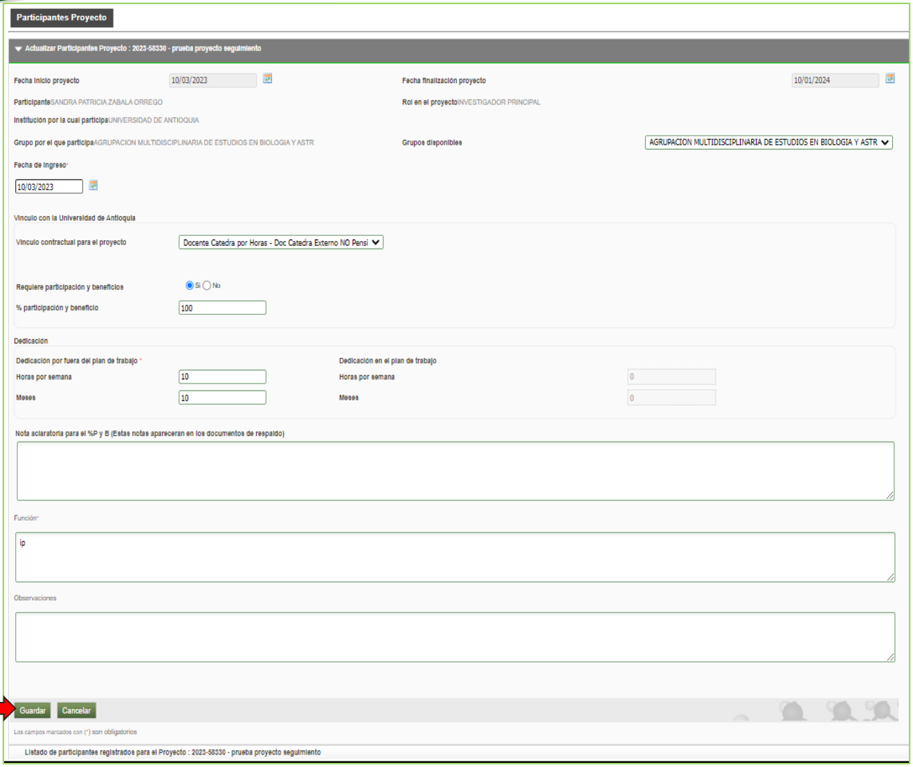
Figura 18 - Participantes proyecto - volver2.5.3. Cambiar Participante NN
Los participantes NN son los que fueron matriculados previamente como indeterminados; es decir, se separa el cupo del participante, pero en la matrícula inicial no se sabía quién ocuparía el rol.
Verifique si el proyecto tiene participantes N.N.; en ese caso presione el botón Cambiar Participante N.N. (Ver figura 19).
Figura 19 - Cambiar participante NN
Se abrirá una nueva ventana donde el sistema mostrará el listado de participantes incluyendo los NN (se detectan porque no tienen nombre en la columna participante, pero sí tienen rol y dedicación). 1. Seleccione la fila donde aparece el participante NN (aparece un símbolo de chequeo verde en la columna Selección). 2. En la parte superior del listado se activará el botón Consultar Persona. (Ver figura 20).
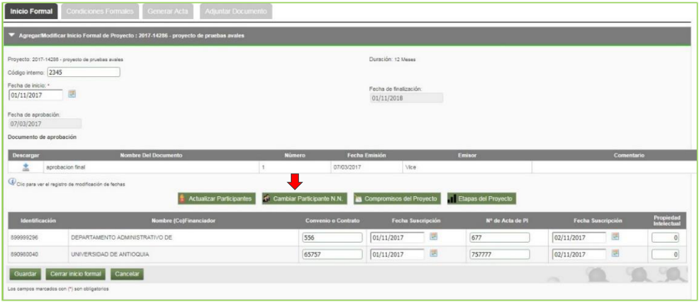
Figura 20 - Consultar persona NN> Se debe tener a mano la información real de los participantes, la cual debe ingresar con mucha atención ya que, una vez almacenado el registro, algunos campos no se podrán modificar.
- Al presionar Consultar persona, el sistema abrirá la ventana Consulta de personas.
- Si conoce la cédula del participante, digítela en el campo Cédula.
- O puede realizar la búsqueda ingresando el nombre y un apellido en el campo Nombre.
- Presione el botón Consultar. (Ver figuras 21 y 22).
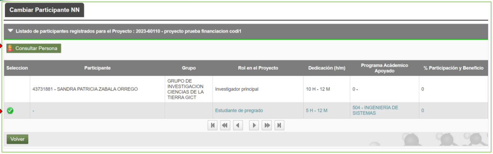
Figura 21 - Consulta por cédulaFigura 22 - Consulta por nombre
- Seleccione el participante presionando el ícono verde de visto bueno que aparece al lado derecho del nombre; el sistema lo llevará nuevamente al listado de participantes.
- El sistema coloca a la persona seleccionada en el campo participante. Presione el botón Modificar Datos. (Ver figura 23).
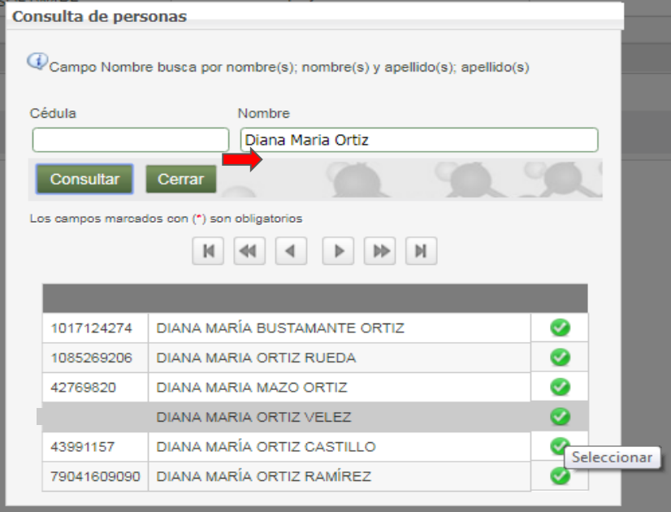
Figura 23 - Modificar datos- Ingrese la información del participante en cada campo según la tabla de parámetros:
| Campos | Detalle |
|---|---|
| Fecha inicio proyecto | No editable. |
| Fecha finalización proyecto | No editable. |
| Participante | No editable. |
| Rol en el proyecto | Se puede editar para el participante NN. |
| Institución por la cual participa | Se puede editar para el participante NN. |
| Grupo por el que participa | Se puede editar y modificar. |
| Fecha de Ingreso* | Se puede editar y modificar (obligatorio). |
| Vínculo contractual para el proyecto | Seleccione si aplica (Otro o Ninguno). |
| Requiere participación y beneficios | Seleccione Sí o No. |
| % participación y beneficio | Asigne el valor porcentual (tope global 100%). |
| Dedicación fuera del plan | Horas por semana y meses. |
| Dedicación dentro del plan | Horas por semana y meses. |
| Nota aclaratoria %P y B | Texto explicativo si aplica. |
| Función | Funciones a desarrollar en el proyecto. |
| Observaciones | Observaciones requeridas. |
- Finalice presionando Guardar. (Ver figura 24).
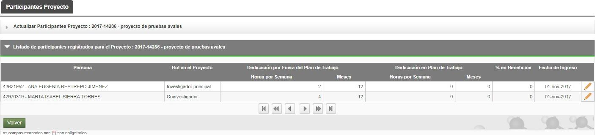
Figura 24 - Cambiar participante NN- La información se verá reflejada en la fila del participante editado. Realice el mismo proceso para cada participante NN y, al finalizar, presione el botón Volver para regresar a la pestaña de Inicio Formal. (Ver figura 25).
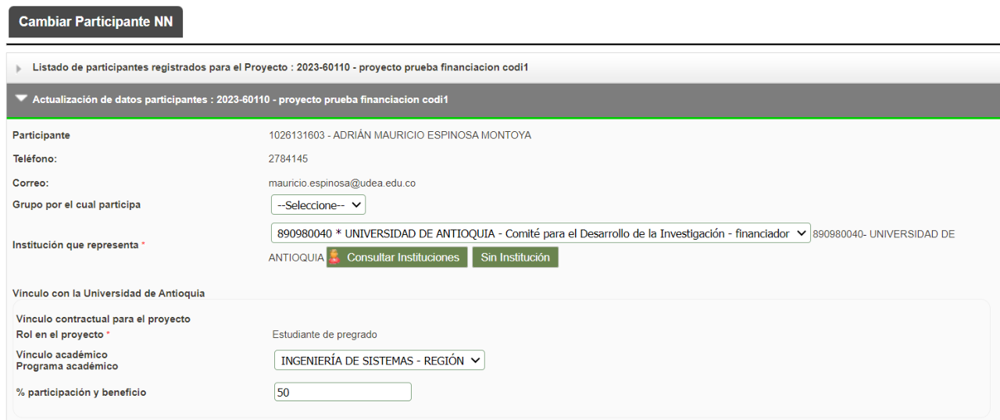
Figura 25 - Listado de participantes del proyecto2.5.4. Compromisos del Proyecto
Los compromisos del proyecto se dividen en dos conceptos: - Compromisos Obligatorios: Son los configurados en la convocatoria de acuerdo con los términos de referencia y son de obligatorio cumplimiento. - Compromisos Opcionales: Son aquellos adicionales que se desean asumir para el proyecto.
Presione clic en la opción Compromisos del proyecto (Ver figuras 26 y 27).
Figura 26 - Compromisos del proyecto
El sistema muestra el formulario con el listado de compromisos obligatorios y permite agregar opcionales previamente definidos por el investigador principal. - Seleccione el compromiso dando clic sobre él (aparece el símbolo de visto bueno verde a la izquierda). - Se habilitan los botones Ver detalle y Editar. (Ver figura 27).
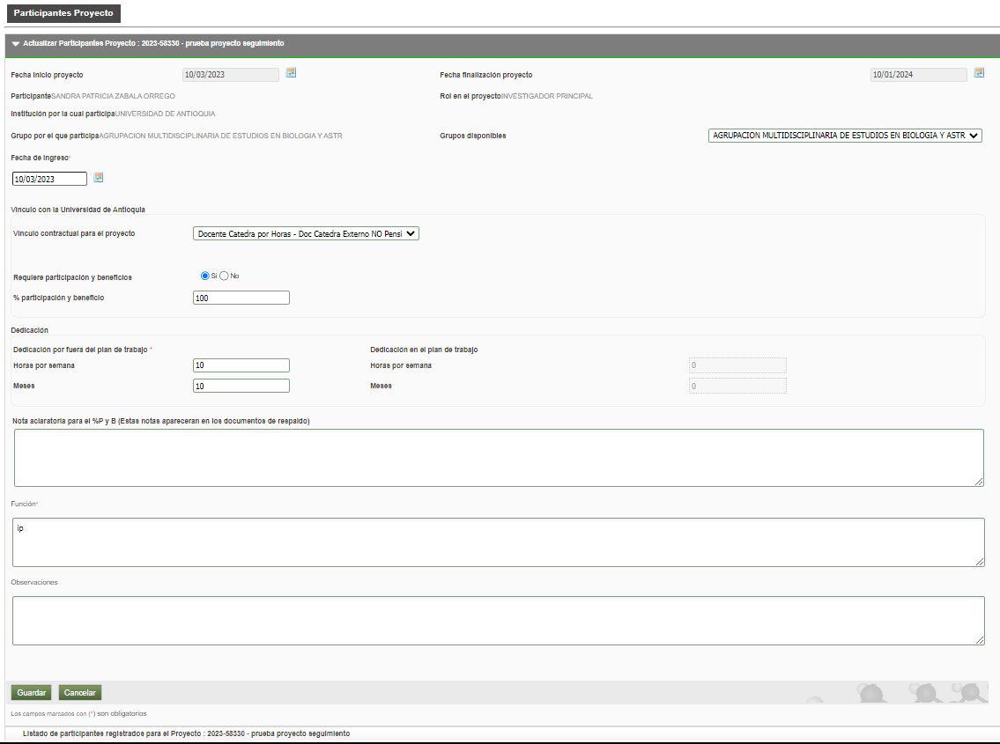
Figura 27 - Selección de compromisoAcciones sobre compromisos:
- Editar: Presione EDITAR; el sistema despliega el formulario para ingresar la Fecha estimada de cumplimiento del compromiso. Presione Guardar y luego presione Notas del compromiso. (Ver figura 28).
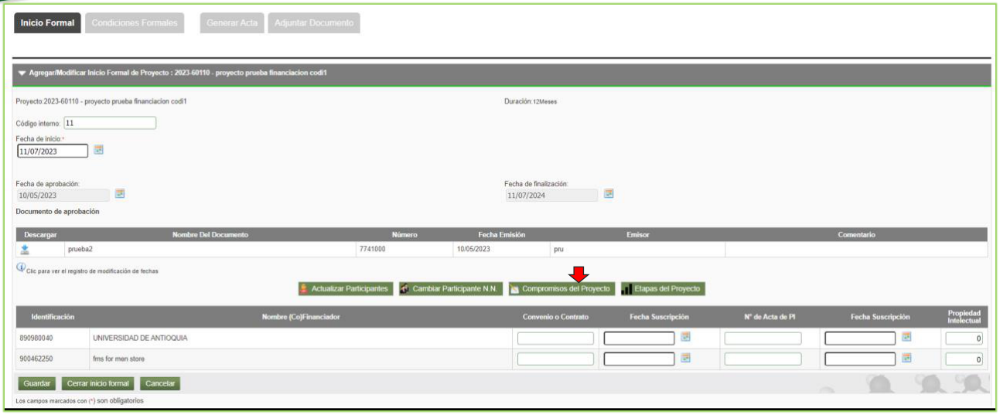
Figura 28 - Editar compromiso- Notas del compromiso: Permite agregar observaciones. Escriba el texto en el campo Nota y presione Agregar nota. Regrese presionando Volver y finalmente Guardar. (Ver figura 29).
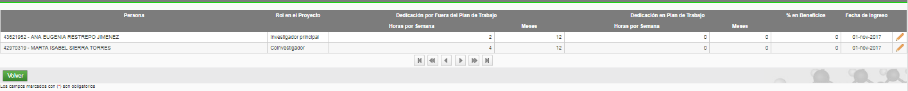
Figura 29 - Agregar Nota- Ver detalle: Muestra una ventana de solo lectura con toda la información del compromiso. Presione Cerrar para volver. (Ver figura 30).
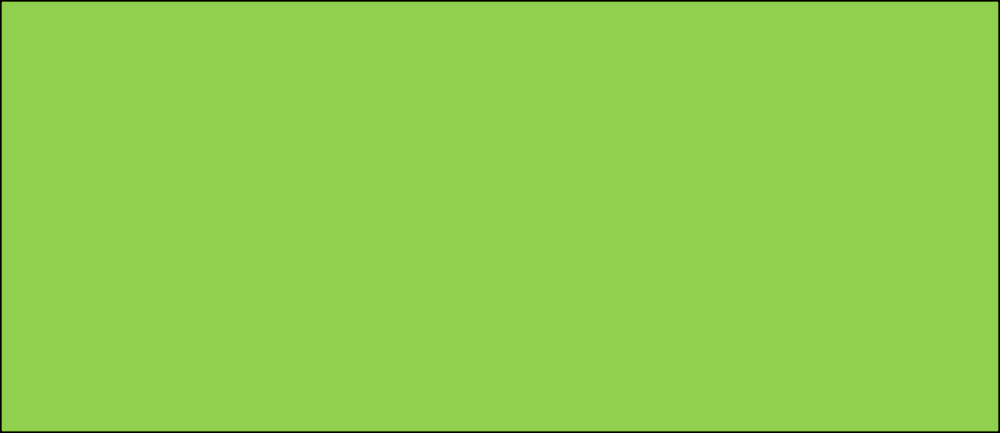
Figura 30 - Detalle de compromiso- Nuevo compromiso (opcional): Presione Nuevo. Complete los campos y presione Guardar:
| Campo | Detalle |
|---|---|
| Compromiso | Ingrese el compromiso a agregar. |
| Comentarios | Registre las observaciones o comentarios del compromiso. |
| Fecha estimada de cumplimiento | Ingrese la fecha posible del cumplimiento del compromiso. |
| Guardar | Almacena el registro. |
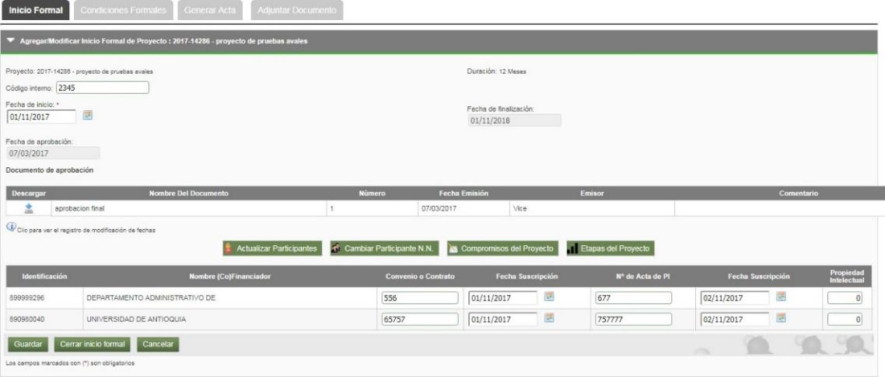
Figura 31 - Formulario Nuevo compromisoAl presionar Guardar, el sistema muestra el mensaje de confirmación y el listado consolidado de compromisos Científicos y Administrativos. Presione el botón Volver para continuar. (Ver figura 32).
Figura 32 - Compromisos del proyecto
2.5.5. Etapas del proyecto
Las etapas del proyecto son las actividades que se realizarán en tiempos definidos, estableciendo así un cronograma para el proyecto.
Presione clic en el botón Etapas del proyecto (Ver figura 33).
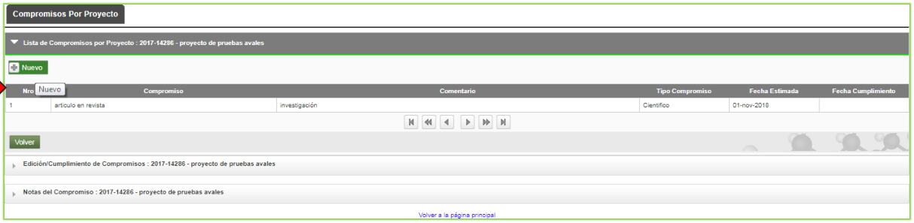
Figura 33 - Botón etapas del proyectoAl momento de guardar por primera vez el inicio formal, el sistema genera el mensaje:
"Crear etapa única: ¿Desea crear automáticamente una etapa con posibilidad de ejecución presupuestal y por toda la duración del proyecto? Luego de ejecutar esta acción, si es necesario podrá modificar las etapas del proyecto." (Ver figura 34).
Figura 34 - Mensaje crear etapa única
Presione el botón Aceptar. El sistema crea de forma automática la etapa única que cubre todo el tiempo del proyecto. (Ver figura 35).
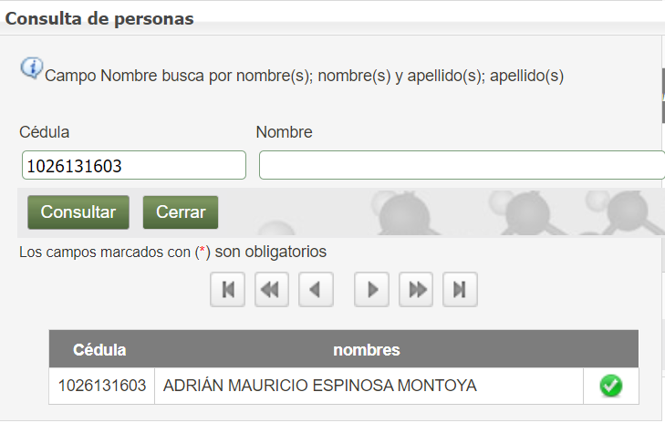
Figura 35 - Etapa única2.5.6. Nueva etapa
Para agregar una nueva etapa presione el botón + ubicado en el extremo derecho de la tabla. El sistema abre una nueva ventana donde debe ingresar los siguientes datos:
| Campo | Detalle |
|---|---|
| Nombre | Diligencie el nombre de la etapa. |
| Ejecución presupuestal | Sí / No: Indica si en esta etapa se pueden realizar o no solicitudes de cambio de rubros o adición presupuestal. |
| Duración | Escriba la duración en meses de la etapa. |
| Orden | Escriba la prioridad de la etapa estableciendo el orden numérico. |
| Inicio de vigencia | Seleccione la fecha de inicio de la vigencia de la etapa (desde). |
| Fin de vigencia | Seleccione la fecha fin de la vigencia de la etapa (hasta). |
| Descripción | Ingrese información adicional para la etapa que está creando. |
| Guardar | Presione para finalizar y almacenar el registro. |
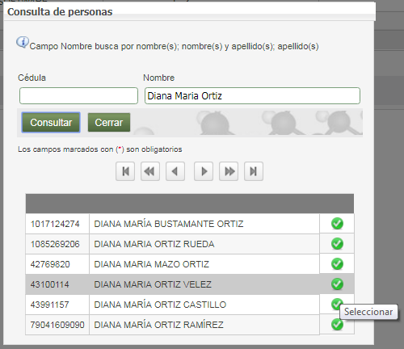
Figura 36 - Nueva etapaValide en la tabla que la etapa creada haya quedado registrada. Puede ingresar tantas etapas como sea necesario para determinar en qué momentos será posible ejecutar el presupuesto. Una vez finalice, presione la opción Volver para regresar a la pantalla de Inicio Formal. (Ver figura 37).
Figura 37 - Nueva etapa creada
2.6. Pestaña Condiciones Formales
Ingrese en la pestaña Condiciones Formales (Ver figura 38). - Observe que el sistema trae las condiciones formales definidas previamente para la convocatoria. - Diligencie la columna Cumplimiento validando si el proyecto cumple o no cada condición formal. - En el campo Observaciones puede ingresar aclaraciones si lo requiere. - Una vez verifique que TODAS las condiciones formales están en SI, finalice presionando Guardar.
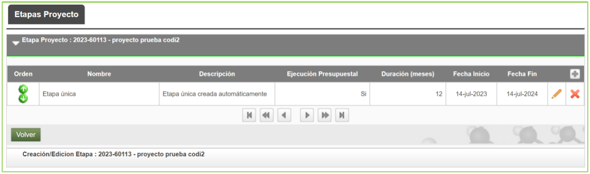
Figura 38 - Condiciones formalesPestaña vacía
Si la pestaña Condiciones formales está vacía (no requiere condiciones previas para esa convocatoria), presione el botón Guardar y continúe directamente con la siguiente pestaña. (Ver figura 39).
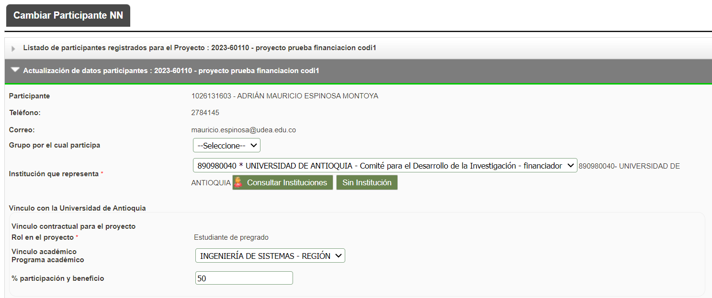
Figura 39 - Condiciones formales vacía2.7. Pestaña Generar Acta
Seleccione la pestaña Generar Acta para generar el acta de inicio del proyecto (documento obligatorio para el cierre del inicio formal).
- Presione clic en el icono + para generar una nueva acta. (Ver figura 40).
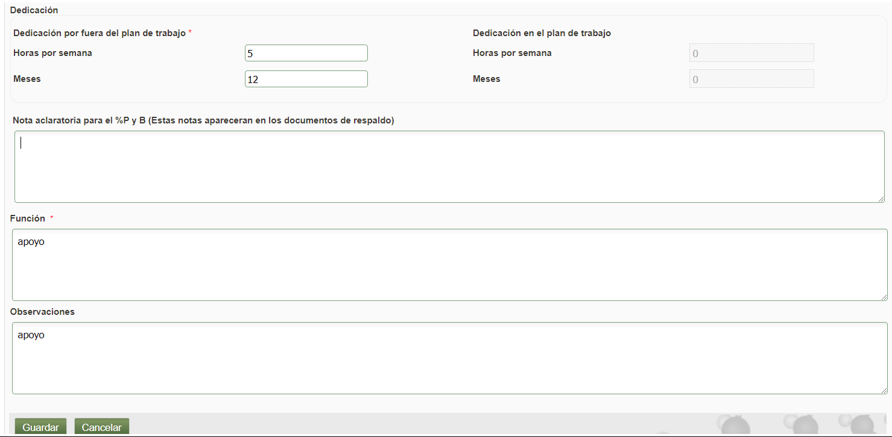
Figura 40 - Nueva acta- En la nueva ventana, marque con check las casillas correspondientes a Objetivo general y Objetivos específicos (y demás secciones de la descripción del proyecto que apliquen). Presione el botón Generar Acta. (Ver figura 41).
Figura 41 - Botón Generar acta
- El sistema abre una ventana con el Acta en formato PDF:
- Presione el icono de descarga (flecha hacia abajo) ubicado en la parte superior derecha.
- Debe descargarla e imprimirla.
- El investigador debe revisarla minuciosamente para realizar las correcciones a que haya lugar previo al cierre.
- Recolectar las firmas físicas de todos los participantes y responsables institucionales. (Ver figuras 42, 43 y 44).
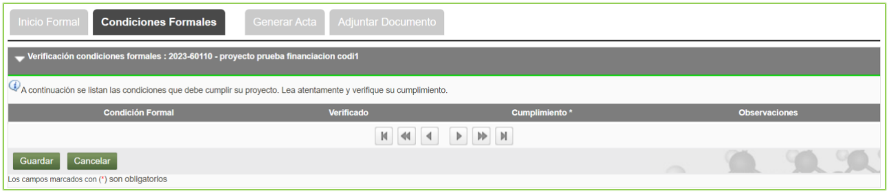
Figura 42 - Descargar acta de inicio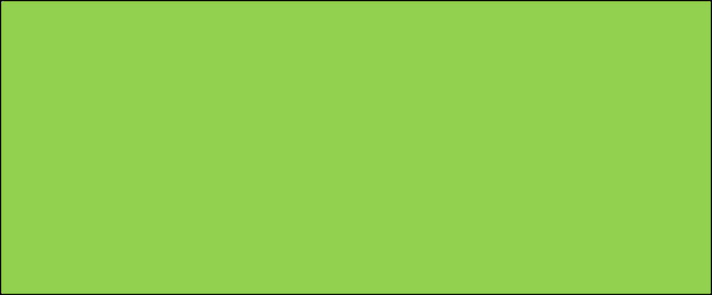
Figura 43 - Acta de inicio (Estructura general, objetivos, compromisos, presupuesto y propiedad intelectual)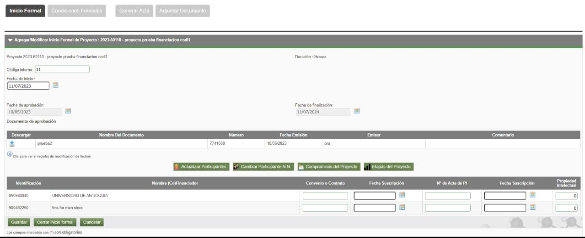
Figura 44 - Acta de inicio (Firmas de responsables, Acta de PI y Anexo 1: Código de Ética Institucional)2.8. Pestaña Adjuntar Documento
Seleccione la pestaña Adjuntar Documento para subir al sistema el acta de inicio debidamente firmada.
- Presione el botón + ubicado al lado derecho de la pantalla junto a la columna Usuario.
Reglas estrictas para el nombre de archivos adjuntos
El nombre del archivo a adjuntar debe ser corto, no exceder 30 caracteres, sin tildes ni caracteres especiales y sin mayúscula sostenida.
- Diligencie los campos del documento:
- Tipo: Debe seleccionar obligatoriamente Acta.
- Ingrese el Nombre del documento y emisor.
- Presione el botón Seleccionar archivo y elija el PDF firmado en su computador.
- Haga clic en Cargar Archivo. Verifique que la barra de carga esté azul y muestre el nombre del archivo.
-
Clic en Guardar. (Ver figura 45 / pantalla adjuntar).
-
Una vez guardado, el sistema muestra el registro del Acta indicando fecha de creación, fechas de inicio y finalización, y el responsable. (Ver figura 46).
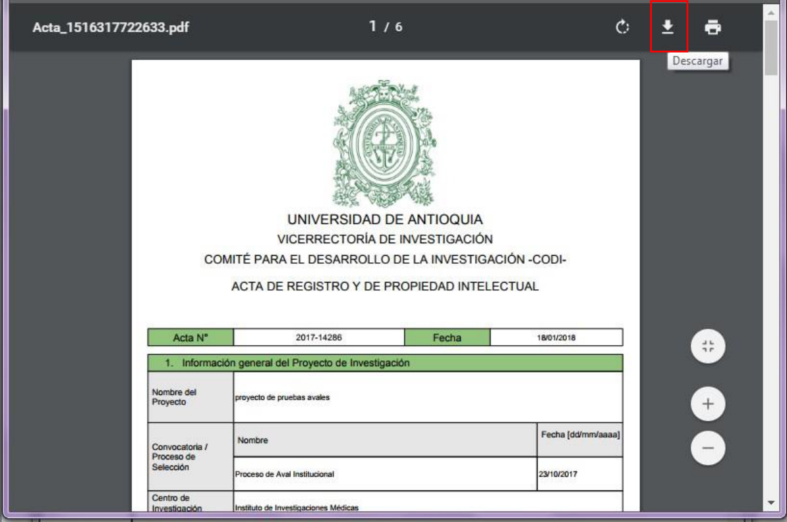
Figura 45 - Adjuntar documento Acta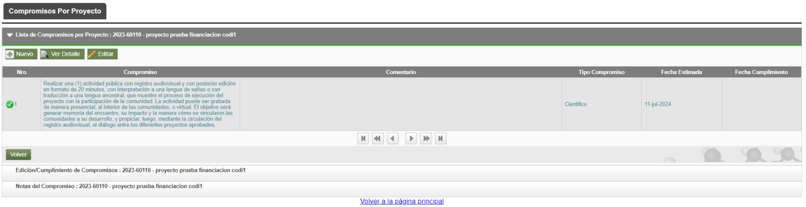
Figura 46 - Documento guardado2.9. Cerrar Inicio Formal
Una vez verificado que toda la información esté completa, con el acta de inicio adjunta y firmada: 1. Diríjase a la primera pestaña Inicio Formal. 2. Presione el botón Cerrar inicio formal. (Ver figura 47).
Consecuencia del Cierre
Una vez cierre el inicio formal, NO podrá realizar ningún ajuste posterior en esta sección y el estado del proyecto cambiará automáticamente a En ejecución.
Figura 47 - Botón cerrar inicio formal
- El sistema muestra la ventana emergente de confirmación: "¿Está seguro que desea dar cierre al inicio formal del proyecto?". Presione el botón Aceptar. (Ver figura 48).
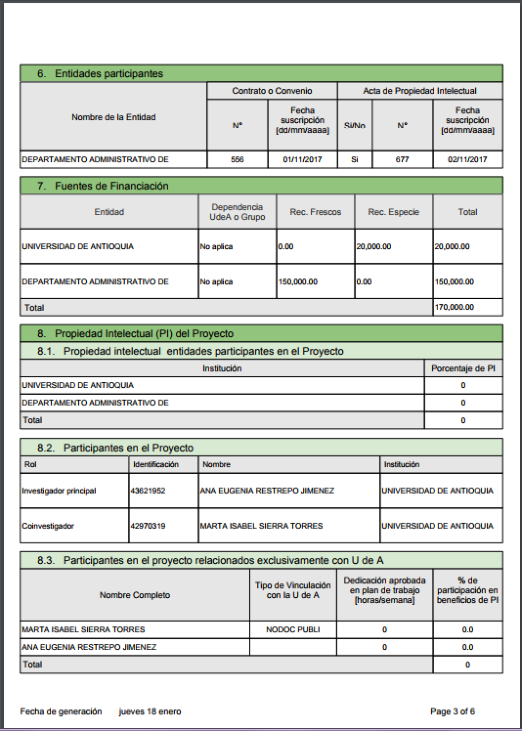
Figura 48 - Aceptar cierre inicio formal- El sistema presenta el mensaje de confirmación: "Inicio formal aplicado exitosamente". (Ver figura 49).
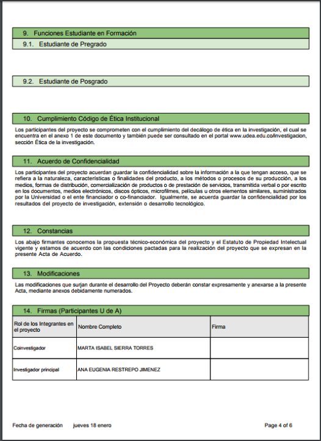
Figura 49 - Inicio formal aplicado2.10. Verificación estado del proyecto
El Jefe de Centro podrá validar que el proyecto ya inició formalmente:
1. Ingrese al SIIU en la ruta: Trámites Administrativos / Seguimiento proyectos.
2. Utilice los filtros de búsqueda y presione Consultar.
3. Observe que en la columna Estado, el proyecto aparece ahora como En ejecución. (Ver figura 50).
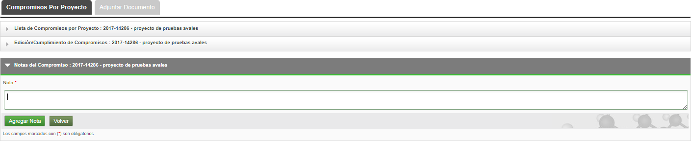
Figura 50 - Proyecto en Ejecución> Todas las imágenes del documento corresponden a proyectos de pruebas del sistema SIIU.
3. Nota de cambio
- No aplica para la primera versión.
Registro de Control y Firmas
| Rol | Nombre | Cargo / Dependencia | Fecha |
|---|---|---|---|
| Elaboró | Sandra Patricia Zabala Orrego | Contratista, Vicerrectoría de Investigación | 16-FEB-2024 |
| Revisó | Kerlin Yohana Bedoya Agudelo | Analista de Procesos, División de Arquitectura de Procesos | 29-ABR-2024 |
| Revisó | Julio César García Castrillón | Analista de Procesos, División de Arquitectura de Procesos | 29-ABR-2024 |
| Aprobó | Gloria Valencia Bustamante | Asistente, Vicerrectoría de Investigación | 29-ABR-2024 |